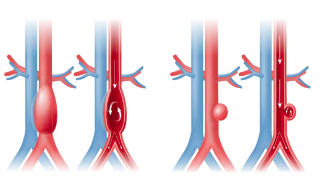

CPT 93970
- Exam duration 60 minutes.
- Patient must be fasting for n hours prior to exam.
- The iliac arteries are imaged as part of every aortic exam
Standar Usage of Aortic Ultrasounds
- Evaluation for patency
- Rule out AAA
- Rule out dissection
- Rule out coarctation
Endovascular Repair Ultrasounds
- Rule out endoleak
- Evauate patency of graft body and limbs
- Monitor aortic sac size
Back to Home Page